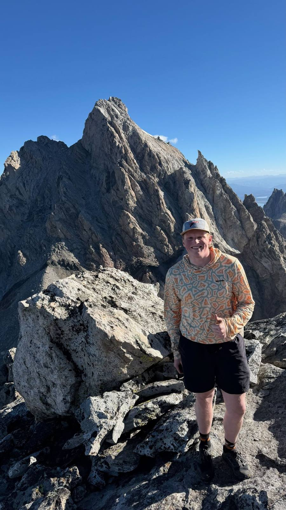

I’m a Bostonian now based in Salt Lake City. I’ve spent the last four years in the B2B tech space across cybersecurity, telecom, cloud, and managed services. For me, analyst relations isn’t about chasing rankings on a grid; it’s about building trust with the people who shape the market.
Inclusion in any analyst research is the firm's independent decision. My job is making sure analysts have accurate, current, well-evidenced information about the companies I represent.
My goal is simple: build meaningful, lasting relationships with the analysts who cover the B2B markets I work in. Four ideas shape how I run a program.
I grew up in Boston and made the move to Salt Lake City two years ago. When I’m not working, I’m usually out in the mountains, skiing, or catching live music.

Four years running AR programs agency-side: 120+ analyst engagements a year across Gartner, Forrester, IDC, 451 Research, Omdia, and Frost & Sullivan, contributing to placements in Magic Quadrants, Forrester Waves, IDC MarketScapes, GigaOm Radars, and Frost & Sullivan Radars. Based in Salt Lake City, looking for an in-house AR role, and happy to walk through any of these programs in more detail.